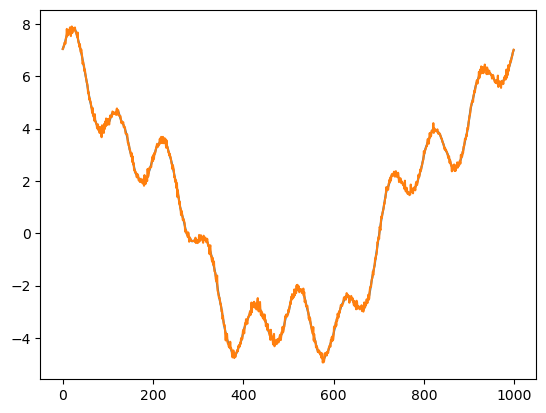
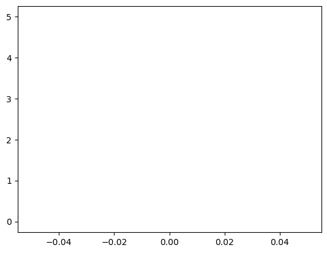
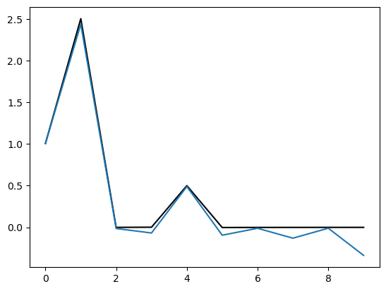
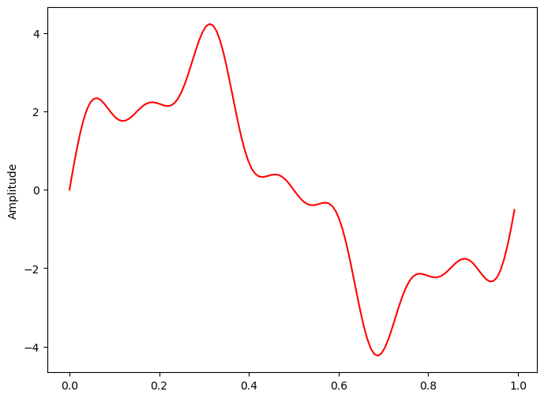
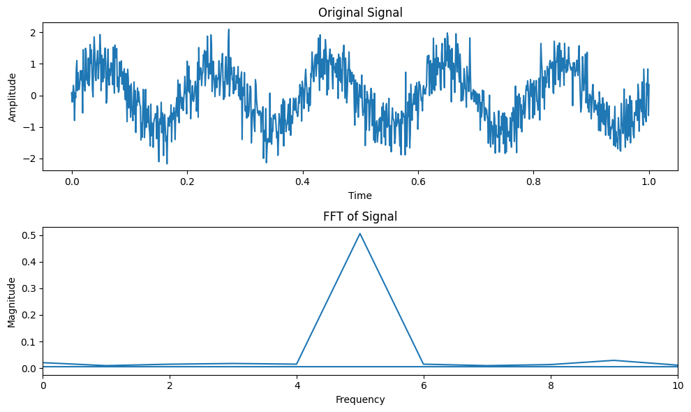

Discrete Fourier Transform#
import numpy as np
from matplotlib import pyplot as plt
def fourier(y, number_of_harmonics):
x = np.matrix(np.arange(0,np.size(y)))/np.size(y)*2*3.14159
#
#print(x)
n = np.matrix(np.arange(0,number_of_harmonics))
omega = x.T.dot(n)
cos_coef = np.matrix(y).dot(np.cos(omega))
sin_coef = np.matrix(y).dot(np.sin(omega))
cos_coef = cos_coef/np.size(y)*2
sin_coef = sin_coef/np.size(y)*2
cos_coef[0,0] = cos_coef[0,0]/2
reconstruct = cos_coef.dot(np.cos(omega).T)+sin_coef.dot(np.sin(omega).T)
return cos_coef,sin_coef, reconstruct, omega
x = np.linspace(0,2*3.14159,1000)
y = 1*np.cos(0*x)+5*np.cos(x)+np.cos(4*x)+np.sin(10*x)+np.random.normal(0,0.1,1000)
plt.plot(y)
wave_number = 100
cos_coef,sin_coef,reconstruct, omega = fourier(y,wave_number)
plt.figure()
plt.contourf(np.cos(omega))
# plt.scatter(np.arange(0,wave_number),np.array(cos_coef),s=40)
# plt.scatter(np.arange(0,wave_number),np.array(sin_coef),s=40)
plt.figure()
plt.plot(reconstruct[0,:].T)
plt.plot(y)
print('cos coef=',cos_coef)
print('sin coef=',sin_coef)
plt.figure()
plt.plot(cos_coef)
cos coef= [[ 1.00856642e+00 5.00424543e+00 8.72927383e-03 7.00623567e-03
9.99601192e-01 -9.63472121e-04 3.14010592e-03 1.98734231e-03
6.99162630e-04 2.93671931e-03 3.14368889e-02 4.94707083e-05
3.21423853e-04 -1.26407175e-02 -3.10100123e-03 -3.56705444e-03
4.69944024e-05 -3.20415152e-03 -3.11859573e-03 2.56195196e-03
6.02776896e-03 -1.91853062e-03 2.63783666e-03 -1.02981025e-03
-3.41817743e-04 -1.65517342e-03 8.42842675e-04 2.02473602e-03
3.92028009e-03 -2.01144253e-03 5.30593571e-03 -2.39046843e-03
4.40835585e-03 8.75764981e-04 -2.31781523e-03 7.30584203e-03
-3.32577834e-03 -5.81162374e-03 -6.27910695e-03 -5.00492582e-03
5.96536721e-03 1.05656513e-02 -8.69266795e-04 3.86873097e-04
-7.69656753e-04 1.78389262e-03 -2.22396206e-03 -7.87132476e-03
-4.06781211e-03 8.63033257e-04 -4.73153204e-03 -2.82076524e-04
-3.65784725e-03 1.68129499e-03 1.24326337e-03 -2.00666710e-03
3.81156953e-03 1.20351684e-03 -6.14459047e-03 -4.11402730e-03
-1.96009133e-03 -1.48361476e-03 3.31816697e-03 1.87699814e-03
-4.82606276e-04 3.81904540e-03 -4.28558404e-03 6.67378261e-03
-1.00216453e-02 -3.58463779e-03 -3.99786419e-03 3.46943698e-03
2.35093100e-03 5.71636061e-03 1.04713881e-03 3.83242640e-03
-4.53157058e-03 -4.15775533e-04 -2.42391932e-03 5.92095298e-03
-4.80433933e-03 5.28136676e-03 2.73376448e-03 9.44690673e-03
-5.36926673e-04 3.26615571e-03 9.19590327e-04 -6.38270810e-03
-4.09727008e-03 3.04992720e-03 -4.85776313e-03 5.48129605e-03
3.77118999e-03 -9.78548608e-04 -2.36092343e-03 4.03366638e-03
1.47424300e-03 8.12135324e-04 -1.99781500e-03 -2.94656935e-03]]
sin coef= [[ 0.00000000e+00 -1.95410393e-02 1.95577143e-03 3.83151569e-03
-3.06924936e-03 2.27803288e-03 -2.38028773e-03 3.21716802e-03
5.89773902e-03 7.50462172e-03 9.98933410e-01 -1.23719583e-02
-2.29157582e-03 -2.49999162e-03 -4.92748596e-03 -3.67681076e-03
2.49228996e-03 -6.09350640e-03 -2.00183361e-03 3.14497323e-03
6.66032415e-03 1.11856753e-03 -5.11549462e-03 1.65611435e-03
-6.07694334e-03 6.24144825e-03 -1.38705901e-03 -5.58930094e-03
-2.98363189e-03 5.29377796e-03 -3.58750119e-03 3.49297120e-03
-5.37810921e-04 -4.80391484e-04 4.75484479e-05 -2.57958413e-03
3.28089716e-03 -6.92467413e-04 3.19479662e-03 -1.65110354e-03
-7.86359061e-04 2.61988555e-03 -4.65675831e-04 3.92268222e-03
3.28136976e-03 4.49816345e-03 3.56292917e-03 1.19559232e-03
2.05220659e-03 3.00030217e-04 -4.58035404e-03 -2.59134175e-03
2.12704216e-04 3.70674519e-03 -1.94293007e-03 1.65076619e-03
-8.67649162e-03 -2.06384663e-03 -1.77890015e-03 -4.84734001e-03
9.01105102e-03 -4.82485024e-03 -9.48625691e-03 -3.86682050e-03
-8.77657019e-03 2.27105238e-03 -2.98903598e-04 -1.04884257e-03
-3.08492493e-03 2.03027578e-03 -1.03161136e-03 -1.10260046e-02
2.09545750e-03 -3.01775745e-03 2.07295225e-03 -8.07895591e-04
2.22815410e-03 -1.67503802e-03 -1.06420376e-03 3.43957304e-03
1.06740539e-03 1.02707112e-03 -6.20844220e-03 6.05351051e-03
-2.27217801e-03 6.51636539e-04 -7.40170142e-04 2.17972192e-04
1.74242997e-03 -6.30851509e-03 -2.86607902e-03 3.61746914e-03
-5.64096914e-04 3.71313930e-04 -8.16892835e-04 -1.13112904e-03
-5.37720187e-03 -1.18176078e-03 3.20185308e-03 -1.28610072e-03]]
[<matplotlib.lines.Line2D at 0x10d68db50>,
<matplotlib.lines.Line2D at 0x10d68dc70>,
<matplotlib.lines.Line2D at 0x10d68dd90>,
<matplotlib.lines.Line2D at 0x10d68deb0>,
<matplotlib.lines.Line2D at 0x10d68dfd0>,
<matplotlib.lines.Line2D at 0x10d68daf0>,
<matplotlib.lines.Line2D at 0x10d69a250>,
<matplotlib.lines.Line2D at 0x10d69a370>,
<matplotlib.lines.Line2D at 0x10d69a490>,
<matplotlib.lines.Line2D at 0x10d69a5b0>,
<matplotlib.lines.Line2D at 0x10d69a6d0>,
<matplotlib.lines.Line2D at 0x10d69a7f0>,
<matplotlib.lines.Line2D at 0x10d69a910>,
<matplotlib.lines.Line2D at 0x10d69aa30>,
<matplotlib.lines.Line2D at 0x10d69ab50>,
<matplotlib.lines.Line2D at 0x10d69ac70>,
<matplotlib.lines.Line2D at 0x10d69ad90>,
<matplotlib.lines.Line2D at 0x10d69aeb0>,
<matplotlib.lines.Line2D at 0x10d69afd0>,
<matplotlib.lines.Line2D at 0x10d69a130>,
<matplotlib.lines.Line2D at 0x10d6a1250>,
<matplotlib.lines.Line2D at 0x10d6a1370>,
<matplotlib.lines.Line2D at 0x10d6a1490>,
<matplotlib.lines.Line2D at 0x10d6a15b0>,
<matplotlib.lines.Line2D at 0x10d6a16d0>,
<matplotlib.lines.Line2D at 0x10d6a17f0>,
<matplotlib.lines.Line2D at 0x10d6a1910>,
<matplotlib.lines.Line2D at 0x10d6a1a30>,
<matplotlib.lines.Line2D at 0x10d6a1b50>,
<matplotlib.lines.Line2D at 0x10d6a1c70>,
<matplotlib.lines.Line2D at 0x10d6a1d90>,
<matplotlib.lines.Line2D at 0x10d6a1eb0>,
<matplotlib.lines.Line2D at 0x10d6a1fd0>,
<matplotlib.lines.Line2D at 0x10d6a1130>,
<matplotlib.lines.Line2D at 0x10e105250>,
<matplotlib.lines.Line2D at 0x10e105370>,
<matplotlib.lines.Line2D at 0x10e105490>,
<matplotlib.lines.Line2D at 0x10e1055b0>,
<matplotlib.lines.Line2D at 0x10e1056d0>,
<matplotlib.lines.Line2D at 0x10e1057f0>,
<matplotlib.lines.Line2D at 0x10e105910>,
<matplotlib.lines.Line2D at 0x10e105a30>,
<matplotlib.lines.Line2D at 0x10e105b50>,
<matplotlib.lines.Line2D at 0x10e105c70>,
<matplotlib.lines.Line2D at 0x10e105d90>,
<matplotlib.lines.Line2D at 0x10e105eb0>,
<matplotlib.lines.Line2D at 0x10e105fd0>,
<matplotlib.lines.Line2D at 0x10e105130>,
<matplotlib.lines.Line2D at 0x10e10c250>,
<matplotlib.lines.Line2D at 0x10e10c370>,
<matplotlib.lines.Line2D at 0x10e10c490>,
<matplotlib.lines.Line2D at 0x10e10c5b0>,
<matplotlib.lines.Line2D at 0x10e10c6d0>,
<matplotlib.lines.Line2D at 0x10e10c7f0>,
<matplotlib.lines.Line2D at 0x10e10c910>,
<matplotlib.lines.Line2D at 0x10e10ca30>,
<matplotlib.lines.Line2D at 0x10e10cb50>,
<matplotlib.lines.Line2D at 0x10e10cc70>,
<matplotlib.lines.Line2D at 0x10e10cd90>,
<matplotlib.lines.Line2D at 0x10e10ceb0>,
<matplotlib.lines.Line2D at 0x10e10cfd0>,
<matplotlib.lines.Line2D at 0x10e10c130>,
<matplotlib.lines.Line2D at 0x10e113220>,
<matplotlib.lines.Line2D at 0x10e113340>,
<matplotlib.lines.Line2D at 0x10e113460>,
<matplotlib.lines.Line2D at 0x10e113580>,
<matplotlib.lines.Line2D at 0x10e1136a0>,
<matplotlib.lines.Line2D at 0x10e1137c0>,
<matplotlib.lines.Line2D at 0x10e1138e0>,
<matplotlib.lines.Line2D at 0x10e113a00>,
<matplotlib.lines.Line2D at 0x10e113b20>,
<matplotlib.lines.Line2D at 0x10e113c40>,
<matplotlib.lines.Line2D at 0x10e113d60>,
<matplotlib.lines.Line2D at 0x10e113e80>,
<matplotlib.lines.Line2D at 0x10e113fa0>,
<matplotlib.lines.Line2D at 0x10e113130>,
<matplotlib.lines.Line2D at 0x10e11b220>,
<matplotlib.lines.Line2D at 0x10d67fac0>,
<matplotlib.lines.Line2D at 0x10d67fa90>,
<matplotlib.lines.Line2D at 0x10e11b460>,
<matplotlib.lines.Line2D at 0x10e11b580>,
<matplotlib.lines.Line2D at 0x10e11b6a0>,
<matplotlib.lines.Line2D at 0x10e11b7c0>,
<matplotlib.lines.Line2D at 0x10e11b8e0>,
<matplotlib.lines.Line2D at 0x10e11ba00>,
<matplotlib.lines.Line2D at 0x10e11bb20>,
<matplotlib.lines.Line2D at 0x10e11bc40>,
<matplotlib.lines.Line2D at 0x10e11bd60>,
<matplotlib.lines.Line2D at 0x10e11be80>,
<matplotlib.lines.Line2D at 0x10e11bfa0>,
<matplotlib.lines.Line2D at 0x10e11b340>,
<matplotlib.lines.Line2D at 0x10e121220>,
<matplotlib.lines.Line2D at 0x10e121340>,
<matplotlib.lines.Line2D at 0x10e121460>,
<matplotlib.lines.Line2D at 0x10e121580>,
<matplotlib.lines.Line2D at 0x10e1216a0>,
<matplotlib.lines.Line2D at 0x10e1217c0>,
<matplotlib.lines.Line2D at 0x10e1218e0>,
<matplotlib.lines.Line2D at 0x10e121a00>,
<matplotlib.lines.Line2D at 0x10e121b20>]


def dft(y):
y = np.asarray(y, dtype=float)
N = y.shape[0]
n = np.arange(N)
k = n.reshape((N, 1))
M = np.exp(-2j * np.pi * k * n / N)
return np.dot(M, y)/np.size(y)
plt.plot(dft(y))
y_hat = np.matrix(dft(y))
print(y_hat.dot((y_hat.conjugate()).T))
print(np.var(y))
[[14.54683599+0.j]]
13.529629771421762
/Users/Shared/miniconda3/envs/jupyterbook/lib/python3.9/site-packages/matplotlib/cbook.py:1762: ComplexWarning: Casting complex values to real discards the imaginary part
return math.isfinite(val)
/Users/Shared/miniconda3/envs/jupyterbook/lib/python3.9/site-packages/matplotlib/cbook.py:1398: ComplexWarning: Casting complex values to real discards the imaginary part
return np.asarray(x, float)
Gibbs phenomenon#
y = np.cos(0*x)+5*np.cos(x)+np.cos(4*x)+np.sin(10*x)
plt.plot(dft(y)[0:10],'k')
# maskout the data by half
y[0:500] = 0
plt.plot(dft(y)[0:10]*2)
[<matplotlib.lines.Line2D at 0x10f459c40>]

Fast Fourier Transform#
import numpy as np
def fft(x):
N = len(x)
if N <= 1:
return x
even = fft(x[0::2])
odd = fft(x[1::2])
T = [np.exp(-2j * np.pi * k / N) * odd[k] for k in range(N // 2)]
return [even[k] + T[k] for k in range(N // 2)] + \
[even[k] - T[k] for k in range(N // 2)]
def fft_recursive(x):
N = len(x)
if N % 2 > 0:
raise ValueError("Length of input must be a power of 2")
elif N <= 32:
return fft(x)
else:
even = fft_recursive(x[0::2])
odd = fft_recursive(x[1::2])
T = [np.exp(-2j * np.pi * k / N) * odd[k] for k in range(N // 2)]
return [even[k] + T[k] for k in range(N // 2)] + \
[even[k] - T[k] for k in range(N // 2)]
def main():
x = np.random.random(1024)
#print("Input sequence:", x)
y = fft_recursive(x)
#print("FFT result:", y)
if __name__ == "__main__":
main()
def FFT(x):
"""
A recursive implementation of
the 1D Cooley-Tukey FFT, the
input should have a length of
power of 2.
"""
N = len(x)
if N == 1:
return x
else:
X_even = FFT(x[::2])
X_odd = FFT(x[1::2])
factor = np.exp(-2j*np.pi*np.arange(N)/ N)
X = np.concatenate(\
[X_even+factor[:int(N/2)]*X_odd,
X_even+factor[int(N/2):]*X_odd])
return X
# sampling rate
sr = 128
# sampling interval
ts = 1.0/sr
t = np.arange(0,1,ts)
freq = 1.
x = 3*np.sin(2*np.pi*freq*t)
freq = 4
x += np.sin(2*np.pi*freq*t)
freq = 7
x += 0.5* np.sin(2*np.pi*freq*t)
plt.figure(figsize = (8, 6))
plt.plot(t, x, 'r')
plt.ylabel('Amplitude')
plt.show()

%timeit X=FFT(x)
%timeit dft(x)
# calculate the frequency
N = len(X)
n = np.arange(N)
T = N/sr
freq = n/T
plt.figure(figsize = (12, 6))
plt.subplot(121)
plt.stem(freq, abs(X), 'b', \
markerfmt=" ", basefmt="-b")
plt.xlabel('Freq (Hz)')
plt.ylabel('FFT Amplitude |X(freq)|')
# Get the one-sided specturm
n_oneside = N//2
# get the one side frequency
f_oneside = freq[:n_oneside]
# normalize the amplitude
X_oneside =X[:n_oneside]/n_oneside
plt.subplot(122)
plt.stem(f_oneside, abs(X_oneside), 'b', \
markerfmt=" ", basefmt="-b")
plt.xlabel('Freq (Hz)')
plt.ylabel('Normalized FFT Amplitude |X(freq)|')
plt.tight_layout()
plt.show()
582 µs ± 14.2 µs per loop (mean ± std. dev. of 7 runs, 1,000 loops each)
251 µs ± 2.48 µs per loop (mean ± std. dev. of 7 runs, 1,000 loops each)
---------------------------------------------------------------------------
NameError Traceback (most recent call last)
Cell In[7], line 4
2 get_ipython().run_line_magic('timeit', 'dft(x)')
3 # calculate the frequency
----> 4 N = len(X)
5 n = np.arange(N)
6 T = N/sr
NameError: name 'X' is not defined
import numpy as np
def fft(x):
N = len(x)
if N <= 1:
return x
even = fft(x[::2])
odd = fft(x[1::2])
T = [np.exp(-2j * np.pi * k / N) * odd[k] for k in range(N // 2)]
return [even[k] + T[k] for k in range(N // 2)] + \
[even[k] - T[k] for k in range(N // 2)]
import numpy as np
import matplotlib.pyplot as plt
# Generate a sinusoidal signal with noise
t = np.linspace(0, 1, 1000)
f_signal = 5 # Frequency of the signal
signal = np.sin(2 * np.pi * f_signal * t) + 0.5 * np.random.randn(1000) # Adding noise
# Compute FFT
fft_result = np.fft.fft(signal)
frequencies = np.fft.fftfreq(len(signal), t[1] - t[0])
# Plot the original signal
plt.figure(figsize=(10, 6))
plt.subplot(2, 1, 1)
plt.plot(t, signal)
plt.title('Original Signal')
plt.xlabel('Time')
plt.ylabel('Amplitude')
# Plot the FFT result (scaled properly)
plt.subplot(2, 1, 2)
plt.plot(frequencies, np.abs(fft_result) / len(signal)) # Normalize FFT by the length of the signal
plt.title('FFT of Signal')
plt.xlabel('Frequency')
plt.ylabel('Magnitude')
plt.xlim(0, 10) # Limiting x-axis to frequencies up to 10 Hz for clarity
plt.tight_layout()
plt.show()
